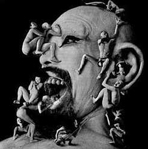

1886: Birth of the Corporate Person
Astounds the Sovereign People
|

|
INTRODUCTION
AREAS OF IMPACT
STUDY RESOURCES
LEGAL\PHILOSOPHIC DEBATES
MODELS
ALLIES
THE SCOURGE OF DEMOCRACIDE
How Popular Rule is Suffocated by Corporate Personhood
Perhaps the most stunning weapon corporations use to dominate our world is the offensive shield of personhood that they bought from a bankrupt Supreme Court a century ago. The Supremes of that dark day unexplainedly pronounced that corporations were persons and thus entitled to the same Constitutional rights and protections as living, breathing people. As "persons" corporations no longer have to pretend they are the obedient subject entities of the sovereign people who created them. They suddenly become our equals in law and - given their wealth, scale and aggressive legal hordes - our actual masters in political practice. Ninety years later another BIG-friendly Court rules that since corporations can only express themselves by belching money, it would violate their free speech rights to curb their campaign finance spew. They have thus drowned out the People's voice in politics today.
Campaign finance reform is one tortuous path to regaining popular control, but revoking corporations' personhood and their First Amendment "rights" is a much surer way to evict these anti-democratic bodies from our politics and halls of governance for once and for all.
Basics
When our founding fathers sat down to write our Constitution, they had just fought a revolution against the vast corporations that ruled America for Britain's King George III (eg., the Hudson Bay Company, Massachusetts Bay Company, Virginia Company, etc.). They were not about to grant corporations any political role whatever in their new republic, let alone the same rights and privileges as their fellow citizens. Our elected representatives likewise never authorized a political role for these bodies, much less equal citizenship or predominant power. It took millions of dollars, hundreds of lawyers and long decades in the courts for corporations to stealthily acquire these privileges and We the Sovereign People were never once consulted. In the face of their consolidating control over our society and all our political processes, we think it's time that we were finally asked - or finally ask ourselves - do we want them to rule us or not?
We thus propose a two-front campaign to challenge to their illicit authority in our communities and in Maine as a whole. The first envisions a series of Town Meeting ordinance initiatives modeled on Pennsylvania townships' proposed "Corporate Privilege Elimination and Democracy Protection Ordinance."
The second is a broader referendum effort to revoke corporate personhood rights state-wide. The proposed language for this initiative will be presented here by mid-December for your comments and refinement. In the meantime, please familiarize yourself with the history and importance of this issue by studying the many references above.
If you know of any other links, articles or resources that might illuminate or advance this issue, please email the content or contact info to bigmed@nancho.net.
Corporate Personhood on the Air
2003 "Ain't that Good News!"
Corporate Personhood Radio Show from
WBAI 99.5 FM, New York Pacifica Outlet